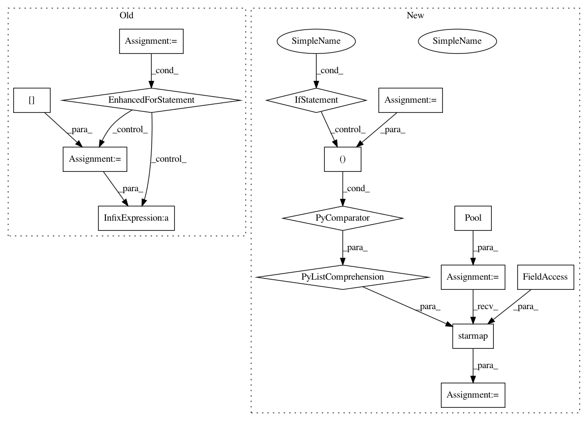

dc719925f9202a1248d2510aa7aa7e3b648f82cc,bin/basenji_scent.py,,main,#,26
Before Change
t0 = time.time()
targets_t = []
for sample in target_wigs:
wig_file = target_wigs[sample]
print(" %s" % wig_file)
sys.stdout.flush()
// initialize new row
targets_t.append([])
// open wig
wig_in = pyBigWig.open(wig_file)
for chrom in chrom_samples:
for pos in chrom_samples[chrom]:
try:
pos_val = wig_in.values(chrom, pos, pos+1)[0]
except:
print(chrom,pos)
exit(1)
targets_t[-1].append(pos_val)
// convert and transpose
targets = np.array(targets_t).T
// shuffle
np.random.shuffle(targets)
After Change
sys.stdout.flush()
t0 = time.time()
p = multiprocessing.Pool(options.processes)
targets_t = p.starmap(bigwig_read, [(wig_file, chrom_samples) for wig_file in target_wigs.values()])
// convert and transpose
targets = np.array(targets_t).T
In pattern: SUPERPATTERN
Frequency: 3
Non-data size: 15
Instances
Project Name: calico/basenji
Commit Name: dc719925f9202a1248d2510aa7aa7e3b648f82cc
Time: 2016-07-14
Author: davidkelley44@gmail.com
File Name: bin/basenji_scent.py
Class Name:
Method Name: main
Project Name: rusty1s/pytorch_geometric
Commit Name: 17e56b9100275068c7ad0e74c0bf247866da846f
Time: 2020-05-31
Author: j-magnusson@t-online.de
File Name: torch_geometric/utils/geodesic.py
Class Name:
Method Name: geodesic_distance
Project Name: rusty1s/pytorch_geometric
Commit Name: cce4382f73d0976fb94b003949acd668377a0869
Time: 2020-04-03
Author: j-magnusson@t-online.de
File Name: torch_geometric/utils/geodesic.py
Class Name:
Method Name: geodesic_distance